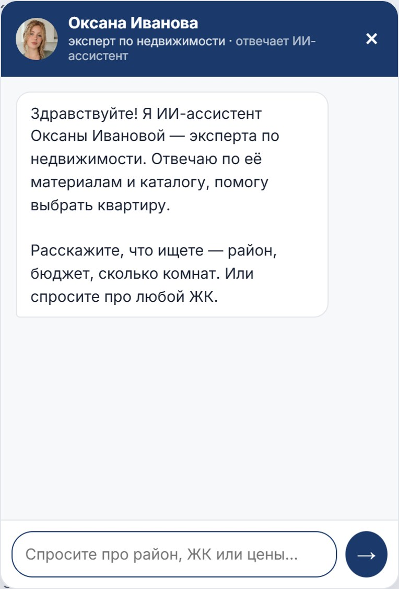

APОфициальный партнёр платформы Лидгена
Продажи на автопилоте во всех каналах
ИИ-менеджер сам пишет новым клиентам, отвечает на заявки за секунды, отсеивает случайных и ведёт тёплых до встречи или оплаты – в Telegram, WhatsApp, на Авито, Циан и в чате на сайте. Все диалоги – в одном окне.
Данные кабинетов клиентов платформы Лидгена, сентябрь–октябрь 2026
Заявки есть, а продаж меньше, чем могло бы
Каналы вразнобой
Мессенджеры, Авито и сайт живут в разных окнах и подписках
Вечер и выходные
Пишут, когда менеджеров нет, а утром интерес уже остыл
Долгий ответ
Пара часов ожидания – и человек уже договорился с другими
Забытая база
Бывшие клиенты и старые заявки лежат и не приносят ничего
Пустые диалоги
Менеджеры полдня выясняют, кому это вообще не нужно
Нет картины
Непонятно, на каком шаге клиенты отваливаются
Клиент написал в три места сразу. Купит у того, кто ответит первым, а не у того, кто ответит лучше.
Одна лента диалогов вместо пяти вкладок
Telegram
Рассылки с прогретых аккаунтов, входящие сообщения, сторис со ссылкой и поиск аудитории в профильных чатах
Несколько номеров в одном окне, голосовые, фото и документы, связь с вашей CRM по API
Авито
Отвечает на вопросы по объявлениям за секунды и передаёт вам готового к разговору клиента
Циан
Уточняет, что ищет человек, подбирает объекты и записывает на просмотр
Чат на сайте
Консультант от имени вашего специалиста: отвечает по каталогу и материалам, просит контакт
ВКонтакте
Сообщения сообщества попадут в ту же ленту и ту же воронку
MAX
Входящие и рассылки по вашей базе в национальном мессенджере
Почта
Цепочки писем новым и тёплым контактам и ответы ИИ на входящие
Ищем новых клиентов и не упускаем тех, кто пишет сам
Поиск клиентов и рассылки
- Находим вашу аудиторию в тематических чатах и сообществах или работаем по вашей базе
- Первые сообщения пишутся под человека, разные заходы сравниваются между собой
- ИИ ведёт переписку, задаёт уточняющие вопросы и отсеивает нецелевых
- Возвращаем «спящих»: бывших клиентов, тех, кто пробовал и не купил, старые заявки
- Вежливо напоминает тем, кто замолчал, – без навязчивости
- Защита аккаунтов: прогрев, плавные лимиты, отдельные прокси
Ответ на каждую заявку сразу
- Отвечает за секунды в любом канале – и днём, и ночью, и в праздники
- Понимает голосовые сообщения, фото и файлы
- Подбирает товар, услугу или объект под запрос
- Присылает ссылку на оплату и проверяет, прошла ли она
- Записывает на встречу и напоминает о ней
- Непростой разговор отдаёт менеджеру одной кнопкой
Это не автоответчик. Это продавец, который не устаёт
Я разговариваю как живой менеджер: слушаю голосовые, читаю файлы, подбираю варианты и отвечаю на возражения. Разница одна – я на связи во всех каналах сразу и круглые сутки.
Ответ за 5 секунд – пока интерес горячий
Консультант на сайте, который доводит до заявки
Говорит от имени вашего специалиста и отвечает строго по вашему каталогу и материалам
Задаёт уточняющие вопросы и берёт телефон – контакт сразу попадает в воронку и CRM
Ставится одной строкой кода на Tilda, WordPress и любой самописный сайт
Переписка с сайта видна в общей ленте рядом с Telegram, WhatsApp и Авито

Как мы запускаем ИИ-продажи
Если у вас много входящих обращений или нужно много писать новым клиентам, сначала разбираемся в бизнесе и воронке, а потом настраиваем платформу Лидгена под ваши процессы.
Аудит
Смотрим каналы, скрипты и воронку – находим, где теряются обращения
Настройка
Каналы, сценарии диалогов, этапы сделки, роли менеджеров и база знаний
Интеграции
CRM, таблицы, оплата, календарь, реклама и аналитика – через API
Сопровождение
Раз в неделю разбираем цифры и улучшаем заходы, промпты и напоминания
Агентство на 30 брокеров: одно окно вместо семи сервисов
Коммерческая недвижимость, Москва и область: больше 5 000 объектов и до 500 обращений в день. До запуска заявки разбирали вручную в семи разных сервисах.
- Все каналы в одной ленте: Telegram, WhatsApp, Авито, Циан и чат сайта; ВК и MAX подключаются
- ИИ уточняет запрос и подбирает объекты – брокер только подтверждает встречу
- Связка с CRM агентства по API и вебхуку: каждое сообщение – в карточке клиента
- ИИ готовит коммерческие предложения и договоры, ведёт сторис брокеров
Данные хранятся на сервере клиента – в рамках 152-ФЗ
Как ИИ-менеджер работает в разных нишах
| Ниша и задача | Сообщений | Ответили | Итог |
|---|---|---|---|
| Фитнес · сеть студийВернули тех, кто пришёл на пробное и пропал | 1 762 | 15% | 28 ссылок на оплату, 10 оплат |
| Онлайн-школа · тренингиПродажи по базе в 24 600 подписчиков | 1 068 | 24% | 45 ссылок на покупку |
| Онлайн-университет · коучингОт бесплатного эфира – к диагностике с тьютором | 1 456 | 14% | 53 записи на диагностику |
| B2B · аналитика доставкиВладельцы ресторанов из профильных чатов – на созвон | 828 | 38% | 40 контактов на созвон |
| Бьюти · студии ресницАккуратно вернули бывших клиенток | 224 | 29% | 15 записей за 3 дня |
| Юристы · банкротство физлицОтбор по долгу, доходу и имуществу | 552 | 15% | 12 заявок на консультацию |
| B2B · каталог компанийКомпании сами присылают данные и прайсы | 1 238 | 44% | 111 прислали данные |
| Недвижимость · коммерческаяВозврат базы и поиск собственников | 3 178 | 37% | 114 квалиф. запросов |
Всё для продаж в одном кабинете
Общая лента диалогов
Все каналы и вся история клиента рядом, заметки к лиду, ручной режим
ИИ, который продаёт
Выясняет потребность, прогревает, отвечает на возражения и вовремя даёт ссылку
Воронка сделок
ИИ сам распределяет лидов по этапам и сообщает менеджеру о горячих
Напоминания
Возвращает в разговор тех, кто не ответил или пропал на полуслове
Сторис на автомате
Каждый день – сторис с кнопкой-ссылкой на всех аккаунтах
Оплата в переписке
Ссылка на оплату в нужный момент и сверка поступлений с таблицей
Какие каналы подключаются?
Сейчас работают Telegram, WhatsApp, Авито, Циан и чат-виджет для сайта. ВКонтакте, MAX и почта – в подключении. Переписка из всех каналов собирается в одну ленту и одну воронку.
Получится связать с нашей CRM?
Да. amoCRM, Битрикс24, самописные системы, Google-таблицы, рекламные кабинеты и аналитика подключаются через API и вебхуки. Если готовой связки нет – соберём её под вашу задачу.
Не заблокируют ли аккаунты за рассылки?
Аккаунты сначала прогреваются, лимиты отправки растут постепенно, у каждой группы аккаунтов свой прокси, а первые сообщения пишутся под конкретного человека. При признаках риска система сама снижает нагрузку на аккаунт.
Клиенты поймут, что им отвечает ИИ?
ИИ-менеджер ведёт обычную переписку: понимает голосовые, фото и документы и отвечает по вашим материалам. Если разговор становится сложным, менеджер забирает его в один клик.
Сколько времени занимает запуск?
Стандартный запуск – 3–5 дней. Если нужна сборка под процессы компании с интеграциями, срок назовём после аудита. Тарифы
Запустим ИИ-продажи в вашем бизнесе
Расскажите, где сейчас теряются заявки и откуда приходят клиенты, – предложим, с какого канала начать и сколько обращений он может дать.